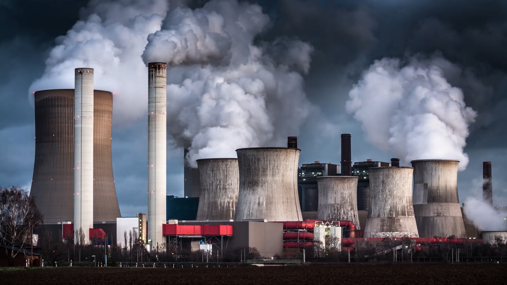
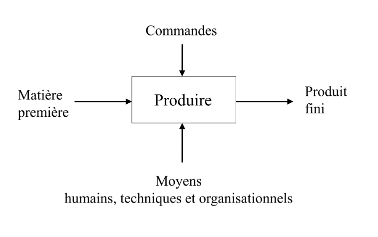
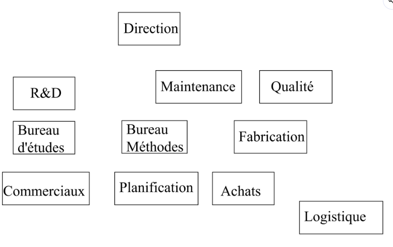
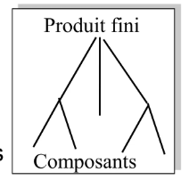
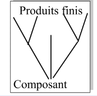
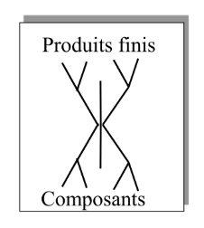
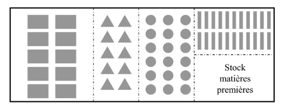
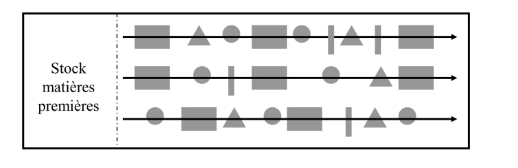
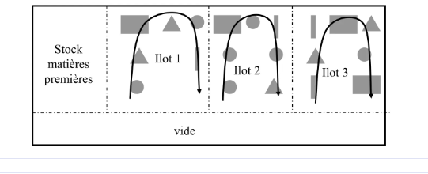
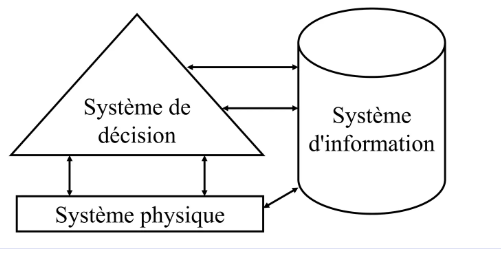

Gestion de Production
Optimiser · Planifier · Produire

Optimiser · Planifier · Produire
Organisation combinant des hommes, des moyens financiers et matériels
Satisfaire les besoins (produits / services) des clients
Réaliser des produits et services en générant du profit

La fonction production transforme des matières premières et des commandes en produits finis, grâce aux moyens humains, techniques et organisationnels.
🔗 Liens avec les autres fonctions

De la production « au plus juste »… vers une stratégie tirée par la demande
Trois ères : manuelle → informatisée → temps réel & coopération
Comment classer les systèmes de production ?

⚡ ex. ensembles électroniques
🧀 ex. produits laitiers
Structure à points de regroupement : les sous-ensembles standards sont assemblés en plusieurs produits finis.
🔁 Lancement répétitif ou non — ex. production unitaire répétitive : moteur fusée

Sections homogènes : les ressources de production sont regroupées par type.

Lignes de fabrication : les ressources sont alignées suivant la gamme du produit.

Îlots de fabrication : les ressources sont regroupées en îlots pour une famille de produits.

Le système de production est un système hiérarchisé de décision articulé autour d'un système d'information et d'un système physique.
🖱️ Cliquez sur une carte pour lancer le quiz, puis choisissez la bonne réponse : ✅ correct / ❌ à revoir, la définition s'affiche ensuite.
🖱️ Cliquez sur une carte, répondez, puis appuyez sur ↩︎ retour pour la fermer et réessayer.